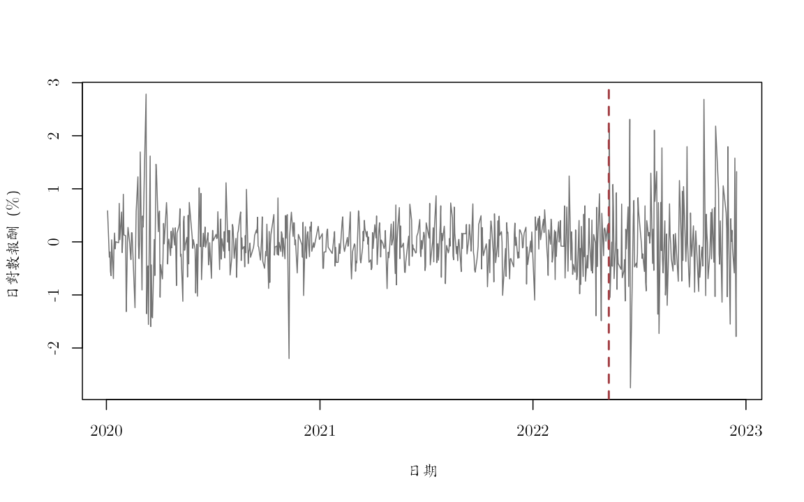

《財務時間序列分析》線上附錄
R07：單根、差分與結構變動
本附錄對應第 9--10 章，使用 FRED 的 JPY/USD（DEXJPUS）與 TWD/USD（DEXTAUS）建構 TWD/JPY 交叉匯率。twd_per_jpy 表示「1 日圓值多少新臺幣」，水準單位是新臺幣／日圓；對數差分與對數報酬以小數表示。固定檔涵蓋 2020-01-02 至 2022-12-16，來源與建置規則見 data/DATA_SOURCES.md。
由於兩市場休市日不同，合併檔存在缺值。本附錄把相鄰共同有效觀察值視為時間索引，手動建立 ADF-like 教學迴歸，並以完全指定的 i.i.d. 隨機漫步虛無模擬有限樣本臨界值。這不是正式套件的 MacKinnon $p$ 值。結構變動部分是回顧性描述，不能作政策或市場事件的因果解釋。
knitr::opts_chunk$set(
echo = TRUE, message = FALSE, warning = FALSE,
fig.width = 8, fig.height = 5,
dev = "ragg_png", dpi = 144,
dev.args = list(background = "white")
)
root_candidates <- c(".", "..")
is_root <- vapply(root_candidates, function(x) {
file.exists(file.path(x, "main.tex"))
}, logical(1))
stopifnot(any(is_root))
project_root <- root_candidates[which(is_root)[1]]
project_path <- function(...) file.path(project_root, ...)
stopifnot(
requireNamespace("ragg", quietly = TRUE),
requireNamespace("systemfonts", quietly = TRUE)
)
cwtex_file <- project_path("assets", "fonts", "cwTeXQKai-Medium.ttf")
stopifnot(file.exists(cwtex_file))
if (!"cwTeX Online" %in% systemfonts::registry_fonts()$family) {
systemfonts::register_font("cwTeX Online", cwtex_file)
}
plot_family <- "cwTeX Online"
讀取真實交叉匯率#
fx <- read.csv(project_path(
"data", "processed", "fred_jpy_twd_daily_2020_2022.csv"
))
fx$date <- as.Date(fx$date)
fx <- fx[order(fx$date), ]
stopifnot(all(diff(fx$date) > 0))
level_data <- fx[
is.finite(fx$twd_per_jpy),
c("date", "twd_per_jpy")
]
return_data <- fx[
is.finite(fx$log_return_twd_per_jpy),
c("date", "log_return_twd_per_jpy")
]
stopifnot(
all(level_data$twd_per_jpy > 0),
all(diff(level_data$date) > 0),
all(diff(return_data$date) > 0)
)
data_profile <- data.frame(
序列 = c("TWD per JPY 水準", "TWD per JPY 日對數報酬"),
起日 = c(min(level_data$date), min(return_data$date)),
迄日 = c(max(level_data$date), max(return_data$date)),
有效觀察值 = c(nrow(level_data), nrow(return_data)),
單位 = c("新臺幣／日圓", "小數日對數報酬"),
來源 = "FRED DEXJPUS 與 DEXTAUS",
check.names = FALSE
)
knitr::kable(data_profile)
| 序列 | 起日 | 迄日 | 有效觀察值 | 單位 | 來源 |
|---|---|---|---|---|---|
| TWD per JPY 水準 | 2020-01-02 | 2022-12-16 | 740 | 新臺幣／日圓 | FRED DEXJPUS 與 DEXTAUS |
| TWD per JPY 日對數報酬 | 2020-01-03 | 2022-12-16 | 709 | 小數日對數報酬 | FRED DEXJPUS 與 DEXTAUS |
水準與一階對數差分#
log_level <- log(level_data$twd_per_jpy)
log_difference <- diff(log_level)
old_par <- par(
mfrow = c(2, 1), mar = c(4.5, 4, 3, 1),
family = plot_family
)
plot(
level_data$date, log_level, type = "l", col = "#173B57",
xlab = "日期", ylab = "log(TWD per JPY)",
main = "交叉匯率對數水準"
)
plot(
level_data$date[-1], 100 * log_difference,
type = "l", col = "#A34045",
xlab = "日期", ylab = "一階對數差分（%）",
main = "相鄰共同有效觀察值的差分"
)
abline(h = 0, col = "gray60")

par(old_par)
水準看起來持續，不足以單獨判定單根；差分看似繞著零，也不等於定態已被證明。
手動建立 ADF-like 迴歸#
估計式為
\[ \Delta Y_t=c+\gamma Y_{t-1} +\sum_{j=1}^{p}\delta_j\Delta Y_{t-j}+u_t. \]
回傳統計量是 $\widehat{\gamma}$ 除以 OLS 標準誤。單根虛無下不能套用普通常態或 Student-$t$ 臨界值。
adf_statistic <- function(
y, lags = 0L,
deterministic = c("constant", "trend", "none")) {
deterministic <- match.arg(deterministic)
y <- as.numeric(y)
stopifnot(all(is.finite(y)), lags >= 0L)
dy <- diff(y)
idx <- (lags + 1L):length(dy)
response <- dy[idx]
X <- matrix(numeric(0), nrow = length(idx), ncol = 0L)
if (deterministic %in% c("constant", "trend")) {
X <- cbind(intercept = 1, X)
}
if (deterministic == "trend") {
X <- cbind(X, trend = idx + 1L)
}
X <- cbind(X, level_lag = y[idx])
if (lags > 0L) {
lagged_differences <- sapply(seq_len(lags), function(j) {
dy[idx - j]
})
if (lags == 1L) {
lagged_differences <- matrix(lagged_differences, ncol = 1L)
}
colnames(lagged_differences) <- paste0("diff_lag", seq_len(lags))
X <- cbind(X, lagged_differences)
}
fit <- lm.fit(X, response)
residual_df <- length(response) - fit$rank
sigma2 <- sum(fit$residuals^2) / residual_df
covariance <- sigma2 * solve(crossprod(X))
standard_error <- sqrt(diag(covariance))
gamma_index <- match("level_lag", colnames(X))
c(
statistic = unname(
fit$coefficients[gamma_index] / standard_error[gamma_index]
),
gamma = unname(fit$coefficients[gamma_index]),
regression_observations = length(response)
)
}
在完全指定的虛無下模擬臨界值#
下列臨界值只對「相同樣本長度、常數項、5 個差分落後、i.i.d. 常態隨機漫步」有效。模擬次數 $B=999$，因此臨界值本身仍有 Monte Carlo 誤差。
simulate_adf_critical <- function(
n, lags = 5L, deterministic = "constant",
B = 999L, seed = 1L) {
set.seed(seed)
statistics <- replicate(B, {
null_series <- cumsum(rnorm(n))
adf_statistic(
null_series, lags = lags,
deterministic = deterministic
)["statistic"]
})
unname(quantile(statistics, c(0.01, 0.05, 0.10)))
}
lags <- 5L
critical_level <- simulate_adf_critical(
length(log_level), lags = lags, seed = 20260718
)
critical_difference <- simulate_adf_critical(
length(log_difference), lags = lags, seed = 20260719
)
critical_table <- data.frame(
序列 = c("對數水準", "一階對數差分"),
臨界值1pct = c(critical_level[1], critical_difference[1]),
臨界值5pct = c(critical_level[2], critical_difference[2]),
臨界值10pct = c(critical_level[3], critical_difference[3]),
check.names = FALSE
)
knitr::kable(critical_table, digits = 4)
| 序列 | 臨界值1pct | 臨界值5pct | 臨界值10pct |
|---|---|---|---|
| 對數水準 | -3.4278 | -2.8721 | -2.6171 |
| 一階對數差分 | -3.4347 | -2.8695 | -2.5559 |
adf_level <- adf_statistic(
log_level, lags = lags, deterministic = "constant"
)
adf_difference <- adf_statistic(
log_difference, lags = lags, deterministic = "constant"
)
adf_table <- data.frame(
序列 = c("log(TWD per JPY)", "一階對數差分"),
ADF_like統計量 = c(
adf_level["statistic"], adf_difference["statistic"]
),
gamma估計值 = c(adf_level["gamma"], adf_difference["gamma"]),
迴歸觀察值 = c(
adf_level["regression_observations"],
adf_difference["regression_observations"]
),
模擬5pct臨界值 = c(critical_level[2], critical_difference[2]),
check.names = FALSE
)
adf_table$在指定教學設計下拒絕 <-
adf_table$ADF_like統計量 < adf_table$模擬5pct臨界值
knitr::kable(adf_table, digits = 5)
| 序列 | ADF_like統計量 | gamma估計值 | 迴歸觀察值 | 模擬5pct臨界值 | 在指定教學設計下拒絕 |
|---|---|---|---|---|---|
| log(TWD per JPY) | -0.44839 | -0.00112 | 734 | -2.87207 | FALSE |
| 一階對數差分 | -12.13708 | -1.27037 | 733 | -2.86945 | TRUE |
在這個指定設計下，對數水準的結果與拒絕單根不相容，而差分的統計量落在左尾。這不是「水準一定有單根」或「差分一定符合某個完整模型」的證明；誤差相依、異質變異、缺值日與結構變動都可能改變參考分配。
原課程套件捷徑：ADF 與 DF--GLS#
原課程教師程式
slides/L06_Nonstationarity/W2L1_adf_test_tseries_package.R
使用 tseries::adf.test()；教師程式
slides/L04_ARMA/W1L4_R_template_for_estimating_ARMA.R
則示範 urca::ur.ers() 的 DF--GLS 檢定。以下直接在同一份固定
TWD/JPY CSV 上執行兩種套件檢定，不改用即時下載資料。
三個結果不能只按函數名稱排在同一欄比較：
- 前面的手動 ADF-like 迴歸含常數、不含趨勢，並使用本附錄模擬的特定虛無臨界值。
tseries::adf.test()的檢定迴歸同時含常數與線性趨勢；其套件 $p$ 值對應這個規格，不是前面常數項規格的 $p$ 值。- ERS 的 DF--GLS 先以廣義最小平方法去平均或去趨勢，再檢定轉換後序列。
model = "constant"與model = "trend"因此代表不同的確定項假設。
stopifnot(
requireNamespace("tseries", quietly = TRUE),
requireNamespace("urca", quietly = TRUE)
)
tseries_level <- tseries::adf.test(
log_level, alternative = "stationary", k = lags
)
tseries_difference <- tseries::adf.test(
log_difference, alternative = "stationary", k = lags
)
tseries_table <- data.frame(
序列 = c("log(TWD per JPY)", "一階對數差分"),
確定項規格 = "常數與線性趨勢",
差分落後階數 = lags,
ADF統計量 = c(
unname(tseries_level$statistic),
unname(tseries_difference$statistic)
),
套件p值 = c(tseries_level$p.value, tseries_difference$p.value),
check.names = FALSE
)
knitr::kable(tseries_table, digits = 5)
| 序列 | 確定項規格 | 差分落後階數 | ADF統計量 | 套件p值 |
|---|---|---|---|---|
| log(TWD per JPY) | 常數與線性趨勢 | 5 | -3.36968 | 0.05867 |
| 一階對數差分 | 常數與線性趨勢 | 5 | -12.13712 | 0.01000 |
dfgls_fits <- list(
level_constant = urca::ur.ers(
log_level,
type = "DF-GLS", model = "constant", lag.max = lags
),
level_trend = urca::ur.ers(
log_level,
type = "DF-GLS", model = "trend", lag.max = lags
),
difference_constant = urca::ur.ers(
log_difference,
type = "DF-GLS", model = "constant", lag.max = lags
),
difference_trend = urca::ur.ers(
log_difference,
type = "DF-GLS", model = "trend", lag.max = lags
)
)
extract_dfgls_5pct <- function(fit) {
critical <- fit@cval
labels <- if (is.null(dim(critical))) {
names(critical)
} else {
colnames(critical)
}
index <- grep("5", labels, fixed = TRUE)[1]
stopifnot(length(index) == 1L, is.finite(index))
if (is.null(dim(critical))) {
unname(critical[index])
} else {
unname(critical[1, index])
}
}
dfgls_table <- data.frame(
序列 = rep(c("log(TWD per JPY)", "一階對數差分"), each = 2L),
GLS確定項轉換 = rep(c("去平均", "去常數與線性趨勢"), 2L),
差分落後上限 = lags,
DF_GLS統計量 = vapply(
dfgls_fits,
function(fit) as.numeric(fit@teststat)[1],
numeric(1)
),
套件5pct臨界值 = vapply(
dfgls_fits, extract_dfgls_5pct, numeric(1)
),
check.names = FALSE
)
dfgls_table$按套件5pct臨界值拒絕 <-
dfgls_table$DF_GLS統計量 < dfgls_table$套件5pct臨界值
knitr::kable(dfgls_table, digits = 5)
| 序列 | GLS確定項轉換 | 差分落後上限 | DF_GLS統計量 | 套件5pct臨界值 | 按套件5pct臨界值拒絕 | |
|---|---|---|---|---|---|---|
| level_constant | log(TWD per JPY) | 去平均 | 5 | 0.80957 | -1.94 | FALSE |
| level_trend | log(TWD per JPY) | 去常數與線性趨勢 | 5 | -1.96961 | -2.89 | FALSE |
| difference_constant | 一階對數差分 | 去平均 | 5 | -3.72806 | -1.94 | TRUE |
| difference_trend | 一階對數差分 | 去常數與線性趨勢 | 5 | -6.10097 | -2.89 | TRUE |
tseries::adf.test() 表中的 0.01 是套件回報的下界，表示實際插值 $p$ 值小於 0.01，不應誤讀成恰好等於 1%。該函數的趨勢規格、DF--GLS 的 GLS 確定項轉換，以及手動
ADF-like 的常數項規格回答的問題略有不同。尤其當序列在短樣本中同時呈現高度持續與
緩慢漂移時，是否納入趨勢可能改變結論；這應記錄為規格敏感度，而不是挑選最容易拒絕
單根的函數。對差分序列拒絕單根，也只支持該檢定規格下的定態對立假設，並不保證沒有
條件異質變異或結構變動。
真實 FX 報酬的回顧性結構變動搜尋#
以兩段常數平均數模型計算每個候選日期的平方和 $F$ 型統計量，每一側至少保留 15% 樣本。分別搜尋：
- 日對數報酬的平均數；
- 絕對日對數報酬的平均數，作為波動尺度的描述性代理。
最大統計量不能套用單一已知日期的普通 $F$ 臨界值。金融報酬也違反等變異獨立常態的簡化條件，因此以下不報普通 $F$ 的 $p$ 值。
break_F <- function(y, tau) {
n <- length(y)
ssr_restricted <- sum((y - mean(y))^2)
ssr_unrestricted <-
sum((y[1:tau] - mean(y[1:tau]))^2) +
sum((y[(tau + 1L):n] - mean(y[(tau + 1L):n]))^2)
(ssr_restricted - ssr_unrestricted) /
(ssr_unrestricted / (n - 2L))
}
scan_break <- function(y, dates, trim = 0.15) {
n <- length(y)
candidates <- ceiling(trim * n):floor((1 - trim) * n)
path <- vapply(candidates, function(tau) {
break_F(y, tau)
}, numeric(1))
selected <- candidates[which.max(path)]
list(
candidates = candidates,
path = path,
selected = selected,
date = dates[selected],
statistic = max(path),
pre_mean = mean(y[1:selected]),
post_mean = mean(y[(selected + 1L):n])
)
}
fx_return <- return_data$log_return_twd_per_jpy
mean_break <- scan_break(fx_return, return_data$date)
scale_break <- scan_break(abs(fx_return), return_data$date)
break_table <- data.frame(
搜尋序列 = c("日對數報酬", "絕對日對數報酬"),
回顧估計日期 = c(mean_break$date, scale_break$date),
最大F型統計量 = c(mean_break$statistic, scale_break$statistic),
斷點前平均值_pct = 100 * c(
mean_break$pre_mean, scale_break$pre_mean
),
斷點後平均值_pct = 100 * c(
mean_break$post_mean, scale_break$post_mean
),
check.names = FALSE
)
knitr::kable(break_table, digits = 5)
| 搜尋序列 | 回顧估計日期 | 最大F型統計量 | 斷點前平均值_pct | 斷點後平均值_pct |
|---|---|---|---|---|
| 日對數報酬 | 2022-06-29 | 2.10323 | -0.03386 | 0.05083 |
| 絕對日對數報酬 | 2022-05-11 | 66.23193 | 0.34222 | 0.63496 |
old_par <- par(
mfrow = c(2, 1), mar = c(4.5, 4, 3, 1),
family = plot_family
)
plot(
return_data$date[mean_break$candidates], mean_break$path,
type = "l", lwd = 2, col = "#173B57",
xlab = "候選日期", ylab = "F 型統計量",
main = "日對數報酬平均數"
)
abline(v = mean_break$date, col = "#A34045", lty = 2, lwd = 2)
plot(
return_data$date[scale_break$candidates], scale_break$path,
type = "l", lwd = 2, col = "#173B57",
xlab = "候選日期", ylab = "F 型統計量",
main = "絕對日對數報酬平均數"
)
abline(v = scale_break$date, col = "#A34045", lty = 2, lwd = 2)

par(old_par)
old_par <- par(family = plot_family)
plot(
return_data$date, 100 * fx_return,
type = "l", col = "gray45",
xlab = "日期", ylab = "日對數報酬（%）"
)
abline(v = scale_break$date, col = "#A34045", lty = 2, lwd = 2)

par(old_par)
絕對報酬搜尋顯示樣本後段的平均波動尺度較高，但回顧估計日期是使用全樣本找出的。它可以描述歷史，不能偷偷放回更早的預測起點，也不能僅憑日期相近就歸因於某個事件。
最終檢核#
- ADF 的確定項與差分落後階數會改變統計量、臨界值與對立假設。
- 普通 OLS 的 $t$ 臨界值不適用於單根虛無。
- 模擬臨界值只對明寫的 i.i.d. 隨機漫步教學設計有效。
- 未知變動點的最大統計量需要專用推論；普通單一日期 $F$ 檢定不夠。
- 回顧性變動日期不是即時可用資訊，更不是因果識別。